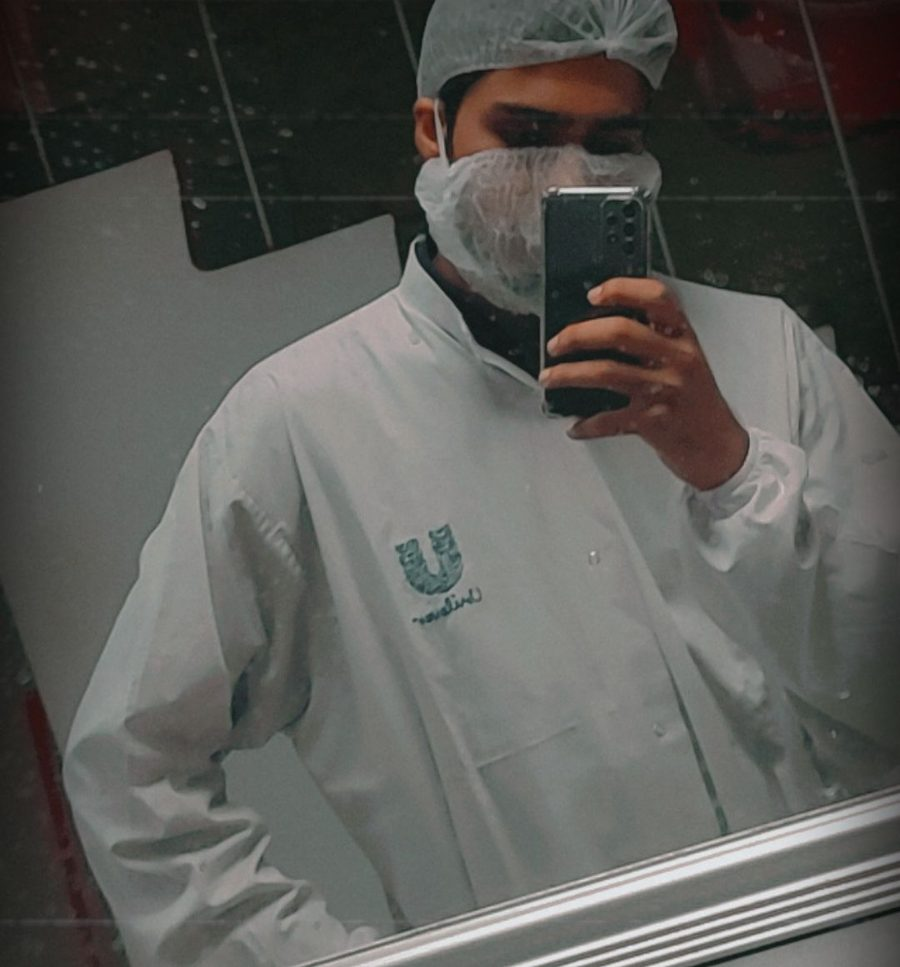
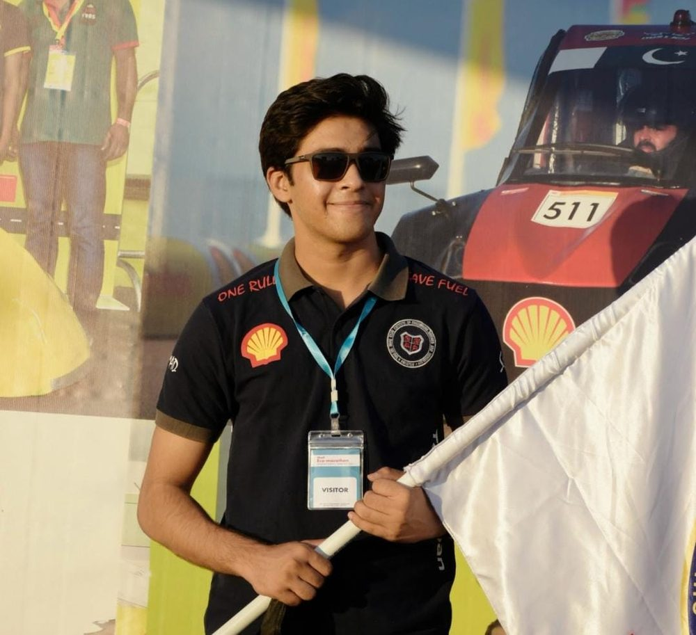
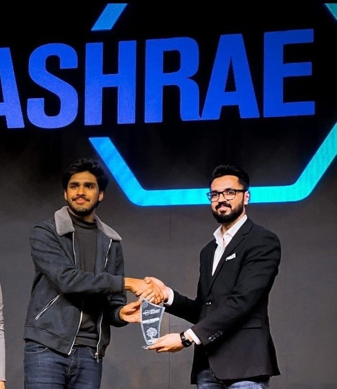
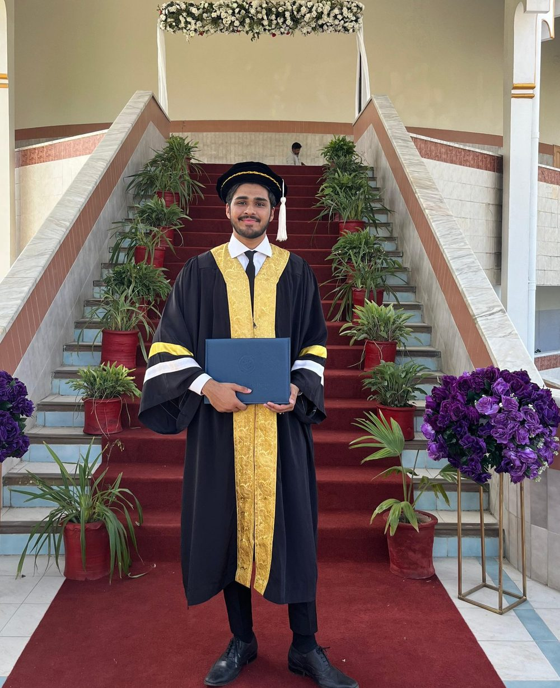
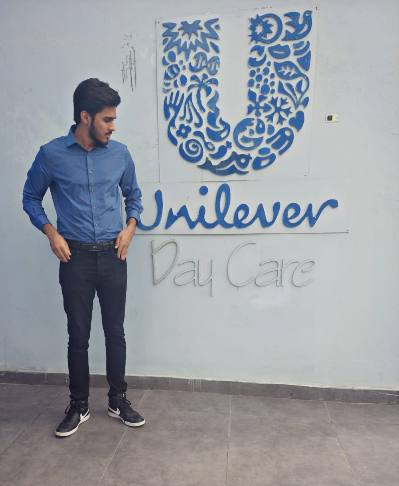

PET bottle lines
Blow moulding, mixing, filling, capping, labelling and packing on KRONES and SIDEL equipment, for carbonated soft drinks and water.
I run beverage and food production lines, and I fix what slows them down.
Production and manufacturing engineer with plant floor experience on PET bottle, carton and can lines. I have led a production team of 80 across three lines at PepsiCo, and I now work at Refresco Australia in Sydney.
I am not tied to one machine or one pack format. I have worked across bottles, cartons and cans, and the water, steam and gas systems that keep them running.
Blow moulding, mixing, filling, capping, labelling and packing on KRONES and SIDEL equipment, for carbonated soft drinks and water.
Tetra Pak aseptic filling for juice cartons, from processing through to the packed case.
Can conveying, accumulation and new can line assets, including setting them up for maintenance in SAP.
Reverse osmosis water treatment, steam and condensate, compressed air, CO2 and nitrogen dosing.
Breakdown analysis, root cause analysis, FMEA, planned maintenance and shutdown work such as a filler main bearing change.
OEE, downtime and material yield reporting built in Power BI, Python and Power Automate from line and SAP data.

Refresco Australia · Condell Park, Sydney
Elgas, industry project with UTS · Sydney
PepsiCo · Faisalabad, Pakistan
OneScreen · Islamabad, Pakistan
Unilever · Lahore, Pakistan
Figures from my current role are left out on purpose.
Mapped where a three line beverage plant used its water, then fixed the largest losses first: reverse osmosis reject reuse, rinser water recovery, closed loop cooling and pressure settings by pack size.
306,000 m³of water saved every year
Read how it was doneThe dosing unit on a water line had been dead for years and nitrogen ran by hand. Rebuilt it with a solenoid mechanism and sensor triggered, PLC controlled pulses tuned per bottle size.
40%less nitrogen used, about PKR 20 million a year
Read how it was doneCommissioned a new SIDEL blow moulding machine on a PET line and a new reverse osmosis water treatment plant, from installation through to stable production.
2new assets handed over to production
Abnormal vibration pointed to the filler main bearing. Planned the shutdown, opened the carousel, replaced the bearing and rebuilt with alignment checks before restart.
20%approximate OEE gain across his time on the lines
Read how it was doneA simple mechanical concept chosen over a robotic cell so it works with the existing cages and daily operations, with the door opening mechanism and retainer designed in CAD.
< 1 yrestimated payback in the business case
Read how it was doneA Power BI dashboard that brings live line data and SAP maintenance data together, so downtime, breakdowns and efficiency are read from one place.
Livepublished and used across the site
A model built on SAP stock counts that shows material loss per process order, per day, per product and as a monthly trend.
3materials tracked from order level to monthly trend
Read how it was doneReplaced manual lubrication rounds with automatic lubrication on critical equipment at a 13 line noodle plant.
40%fewer equipment failures





Understand the machine. Improve the process. Learn from the people who run it.
I am based in Sydney and happy to talk about production, reliability and improvement roles in beverage, food and FMCG plants.